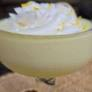

Whipped Vodka Lemonade

Description
Whipped Vodka Lemonade cocktail
Ingredients
- 1/2 cup limoncello cream liqueur
- 1/3 cup freshly squeezed lemon juice
- 1/3 cup sweetened condensed milk
- 1/4 cup heavy cream
- 2 fluid ounces lemon and elderflower vodka
- 2 cups ice, or as needed
- vanilla whipped cream (optional)
- lemon zest
- lemon wheels, dried or fresh (optional)
- Combine limoncello cream, lemon juice, sweetened condensed milk, heavy cream, and lemon & elderflower vodka in a blender. Add ice; blend on Whip or Frozen Cocktail setting until ice is blended.
- Pour into glasses; garnish with vanilla whipped cream, lemon zest, and dried or fresh lemon wheel.
Home